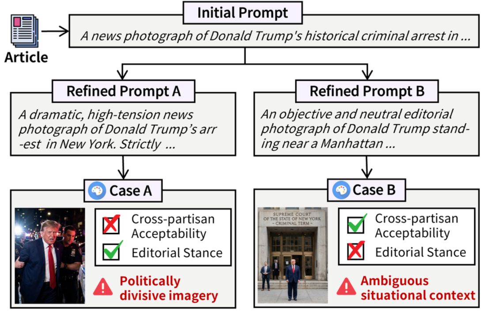
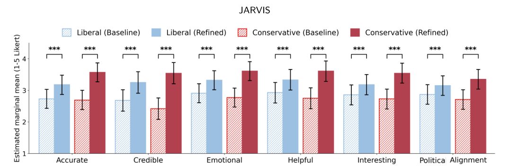
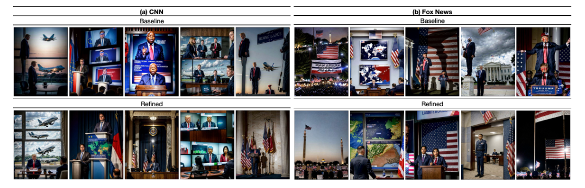

JARVIS — LLM 멀티 에이전트 기반 뉴스 이미지 생성·정제 시스템
JARVIS: Agent-Based Iterative Refinement for Cross-Partisan Acceptability of AI-Generated News Images
01프로젝트 한눈에 보기
기준에 미달한 생성 결과를 진보·보수 독자 에이전트 평가로 식별하고 Reflection 및 조기 종료로 재처리 비용을 관리함

300건의 정치 뉴스 기사에서 지식 그래프를 구성하고, 기자 및 독자 에이전트가 생성 이미지의 정확성과 수용성을 평가해 반복 개선하는 시스템을 구축함.
02해결 방법

기사 구조화
기사 요약과 지식 그래프 트리플릿을 추출해 이미지 생성 프롬프트의 근거 데이터로 사용함.
스타일별 이미지 생성
CNN / Fox News 기자 에이전트가 기사 스타일에 맞는 이미지를 생성함.
독자 에이전트 평가
진보·보수 독자 에이전트가 유용성, 정확성, 감정 적절성, 신뢰성, 흥미도의 5개 기준으로 이미지를 채점함.
Reflection 및 조기 종료
임계값 미달이면 평가 근거를 바탕으로 프롬프트를 수정하고, 목표를 달성하면 즉시 종료해 생성 비용을 줄였음.
설계 포인트
독자 에이전트의 5개 평가 항목과 근거를 다음 생성 프롬프트에 반영하고, 수용 기준 달성 시 반복을 종료해 생성 횟수를 관리함.
03구현 및 연구 방법
Knowledge Graph 기반 프롬프트 구성
기사의 핵심 개체와 관계를 추출해 모델이 텍스트 핵심 사실을 놓치지 않도록 함. 이는 생성 품질과 정확성 확보에 기여함.
정량 평가 기준을 에이전트 피드백 구조로 구현
포토저널리즘 5개 기준을 점수화하고, 에이전트가 점수와 근거를 함께 남기도록 설계해 반복 정제에 바로 활용할 수 있게 함.
세분화된 에이전트 구조를 2개 핵심 페르소나로 최적화
불필요한 demographic 에이전트를 제거하고 핵심 독자 페르소나만 유지해 API 호출량과 지연 시간을 줄였음.
에이전트 평가를 사람 평가로 재검증
독자 에이전트 평가는 자동 필터 역할을 하고, 실제 사용자 연구로 결과를 교차 검증해 시스템 신뢰성을 높였음.
04핵심 결과
반복 정제 후 양측 수용률
독자 에이전트 평가, 1회 차와 5회 차 비교. 두 기사 스타일 모두 뚜렷하게 개선됨.
Reflection의 기여
동일한 기사별 조건에서 반복 정제를 제거하면 성능이 하락함.
생성 효율
동일 생성 예산 비교에서 JARVIS의 평균 생성 횟수는 3.40회.
독립 사용자 평가
진보 50명, 보수 50명 등 총 100명에게 생성 전후 이미지 평가를 수행함. 양측 집단 모두 정제 이미지에 높은 점수를 부여함.


출처: JARVIS Revision 2, Figure 4/6/7, Table 5. 수용률은 독자 에이전트 기준이며, 100명 사용자 평가는 독립적으로 진행함. 평균 생성 횟수 32.1% 절감은 Best-of-5 with Reflection과의 비교 결과임.
05개인 기여 및 논문
- 서로 다른 정치 성향의 에이전트 페르소나 및 프롬프트 설계
- 관점 수용을 유도하는 에이전트 간 자율 피드백 루프 알고리즘을 직접 구현하여 파이프라인 완성
- 문제 정의부터 프레임워크 설계, 시스템 구현, 사용자 실험 및 결과 분석까지 연구 전 과정을 End-to-End로 총괄
AI Agent의 지식 활용 및 품질평가
기업 문서의 핵심 개체와 관계를 지식 기반 입력으로 구성하고, 독자 에이전트처럼 업무별 평가 기준을 적용해 생성 결과를 검증하는 구조로 확장 가능. 재생성 횟수와 응답 지연을 지표로 관리할 수 있음.